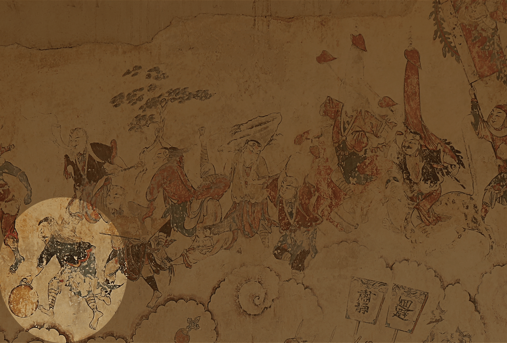
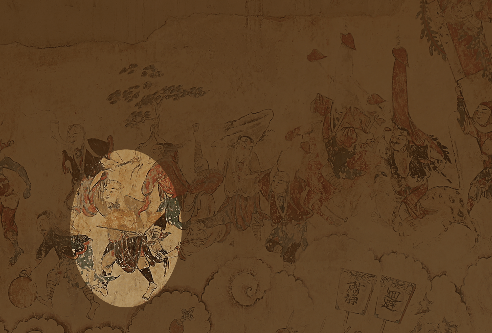
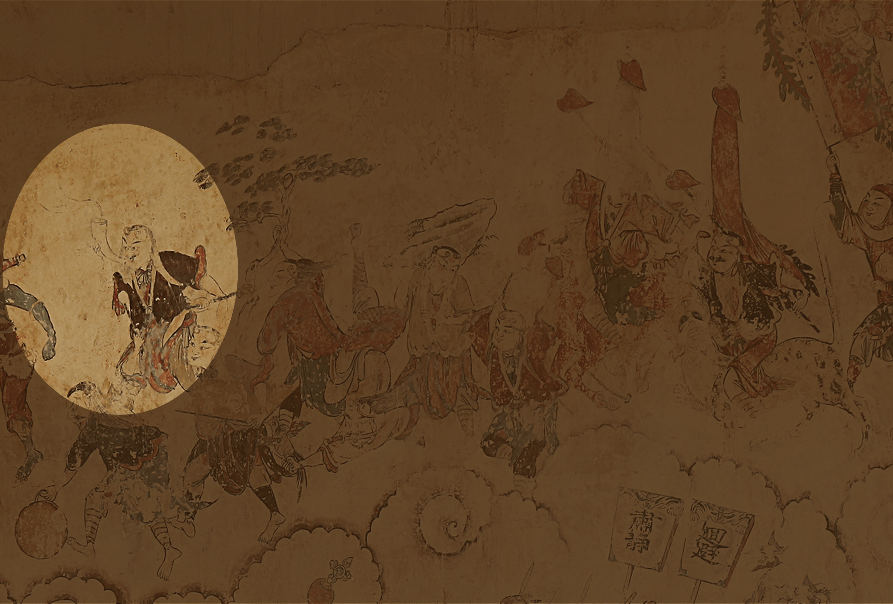
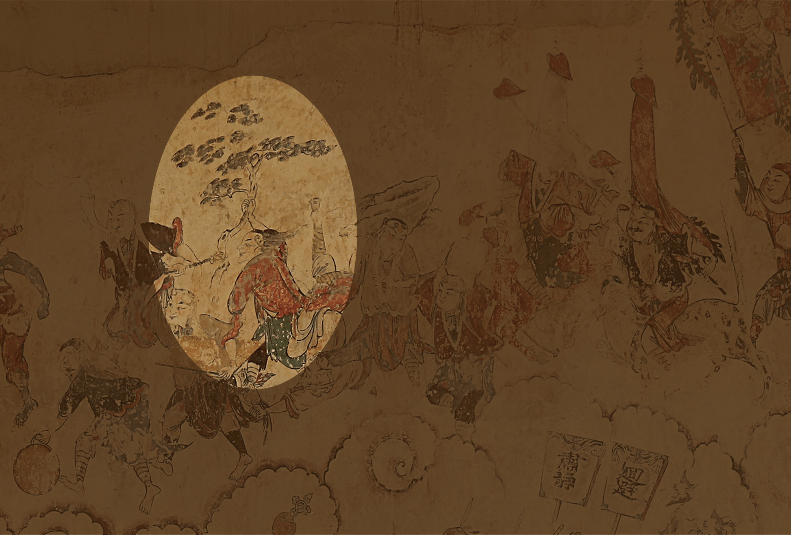
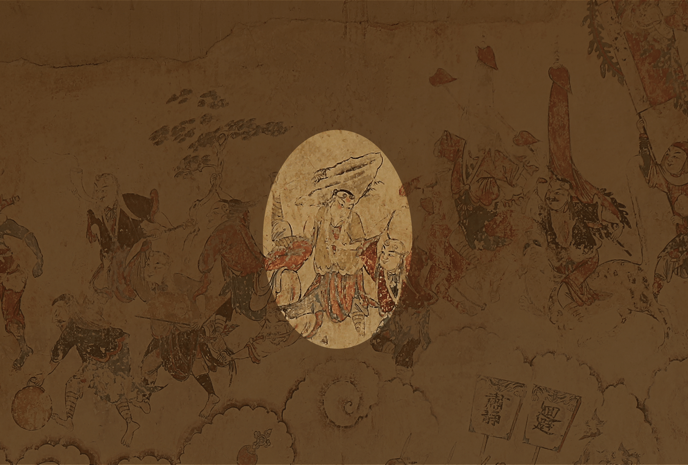
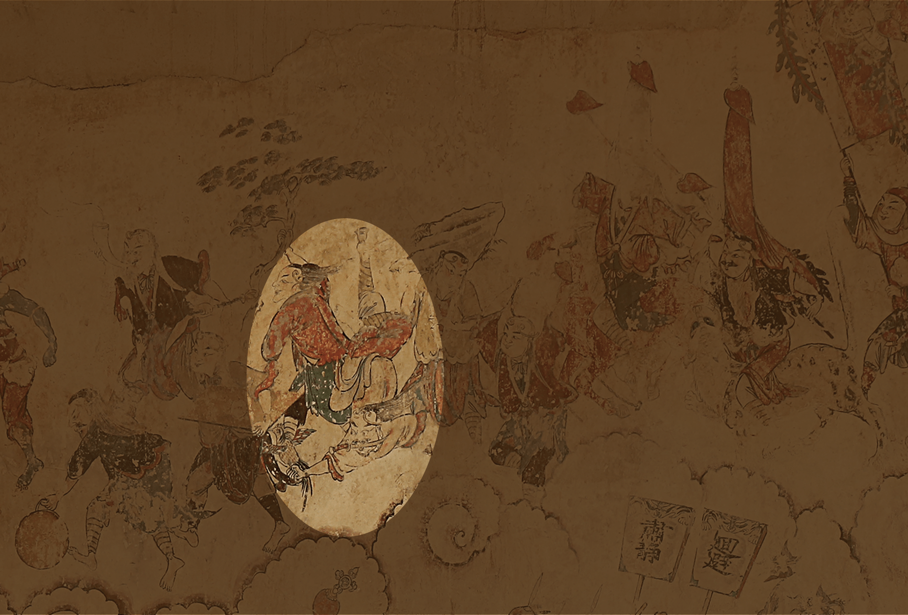
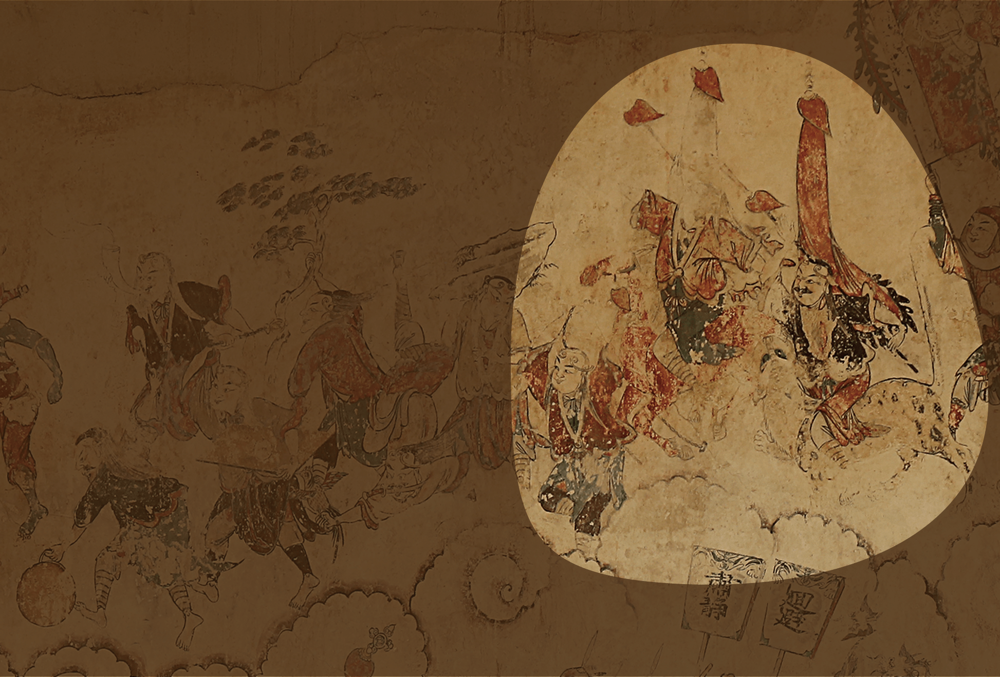

湖南江永 · 勾蓝瑶寨大兴村
勾蓝瑶水龙祠
壁画所构成的，不只是图像，
也是一条被组织起来的观看路径
壁画所构成的，不只是图像，
也是一条被组织起来的观看路径
镜头自祠外推进，落到建筑平面。
右壁绘「出兵」，左壁绘「入将」——
两铺壁画，分立大殿山墙。
现有壁画系列（命名以模块 B 既有节点为准）








向下滚动推进叙事 · 壁画内容向左展开

官员与巫觋主持「打醮」，桌案、香炉、三牲、蜡烛齐备； 椎牛献祭，司炮官点火炮——神赛之仪，于此而起。